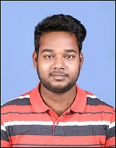

|  |
A-12-A,CISF Unit IOCL, Paradeep |
To prove my skills and expertise in the area of my interest and adding value to my personal goals with strong determination to learn and perform better every time.
| Degree | College | University/Board | Department | Passing Year | Percentage/CGPA |
|---|---|---|---|---|---|
| B.tech. | National Institute of Science and Technology | BPUT | ECE | 2020 | 8.1(upto 7th sem) |
| Intermediate | DAV Public School | CBSE | - | 2016 | 74 |
| Matriculation | De Paul School | ICSE | - | 2014 | 73.3 |
| Name | Description | Events |
|---|---|---|
| Self - balancing Bot | Used Gyro and accelerometer sensors, Stepper Motors with Arduino | Final year B.Tech. Project 2020 |
| Line follower Robot | Pick and Place Mechanism, Path finding algorithm(BFS), proximity sensors, Arduino | e-Yantra 2019, IIT-Bombay |
| Line follower Robot | Sound following mechanism, sound sensor, proximity sensors, Arduino | NSSC 2018,IIT Kharagpur |
| Air pollution control using Arduino | Used air quality sensors and Arduino MIT App Inventor | Sankalp 2018,Techfest at NIST |
| Solar Tracker without using Microcontroller | Used LM358, LDR, Actuators | Sankalp 2018,Techfest at NIST |
Leadership, Practical and Logical Approach, Dedication, Team Work, Strong Work Ethic.
Father’s Name: Bhabagrahi Patra
Mother’s Name: Sushree Routa
Sex: Male
Date of Birth: 17/05/1998
Nationality: Indian
Marital Status: Unmarried
Dr. Swagat Kumar Samantaray, Assistant Professor,
Dept. of Electronics and Communication
E-mail: swagat@nist.edu
I hereby declare that all the information furnished above is best of my knowledge and belief.
16/06/2020